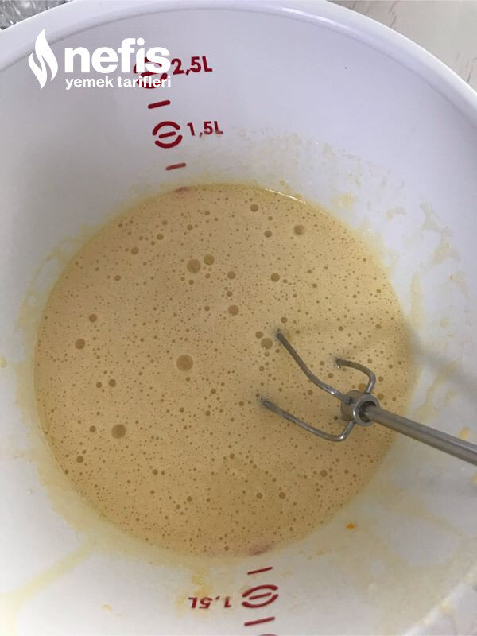

🍽️ 10-12 kişilik⏱️ Hazırlık: 40 dk🔥 Pişirme: 30 dk🏷️ Tatlı Tarifleri🏷️ Sütlü Tatlılar
Malzemeler
- 3 adet yumurta
- 1 su bardağı şeker (200 mg)
- 1 çay bardağı süt
- 1,5 su bardağı un
- 1 çay bardağı sıvı yağ
- 3 yemek kaşığı kakao
- 1 paket kabartma tozu
- İsteğe bağlı 1 paket vanilya
- 1 su bardağı süt
- 1 lt süt
- 3 yemek kaşığı tepeleme nişasta
- 2 yemek kaşığı tepeleme un
- 1 su bardağı şeker
- 3 yemek kaşığı kakao
- 1 paket bitter çikolata
- 1 tatlı kaşığı tereyağ
- 1 paket kakaolu bisküvi (rondodan çekilmiş)
Hazırlanışı
- Önce kekimizi hazırlıyoruz. 3 yumurta ve 1 bardak şekeri mikserle çırpıyoruz. Köpük kıvamına gelince süt ve sıvı yağ ekleyerek biraz daha çırpıyoruz.
- Unu, kakaoyu, kabartma tozunu (istenirse vanilyayı) eleyerek karışıma ilave ederek karıştırıyoruz.
- Yağlanmış fırın kabına kek harcımızı boşaltıyoruz.
- Önceden ısıtılmış 170 -180 derece fırında kontrol ederek 25-30 dakika kontrollü pişiriyoruz.
- Kekimiz pişerken kremasını hazırlıyoruz.
- Elenmiş un, nişasta, şeker, kakao ve sütü karıştırıyoruz, ocağa alıp sürekli karıştırarak pişiriyoruz.
- Kıvam alınca ocaktan alıp, bir kaşık tereyağ ve 1 paket çikolatayı kremaya ilave ediyoruz.
- Pişen kekimizin ilk sıcaklığı geçtikten sonra üzerine kürdanla delikler açıyoruz.
- 1 bardak sütü kekimizin her yerine gelecek şekilde ıslatıyoruz.
- Kekimizin üzerine kremayı dökerek yayıyoruz, yarım saat kadar soğumaya bırakıyoruz.
- Soğuyunca; kakaolu bisküvileri rondodan geçiriyoruz.
- Bisküvi kırıntılarının üçte birini kekin üzerine yayalım (kalan bisküvi kırıntılarını yumuşamaması için servisten hemen önce yayalım)
- Pastamızı 4-5 saat buzdolabında bekletelim. Sonrasında istediğimiz gibi süsleyerek servis edebiliriz.